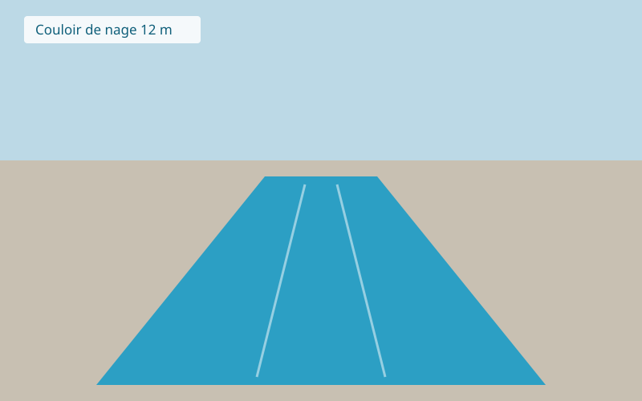

Construction de piscines maçonnées sur mesure, couloirs de nage, bassins miroirs. Garantie décennale.
Spas extérieurs 4 à 7 places, saunas en cèdre, installation et mise en service.
Ouverture et hivernage, contrats d'entretien, analyse de l'eau, dépannage de filtration.

Nos réalisations 2012 : couloir de nage de 12 m à Quillanne-sur-Orme.